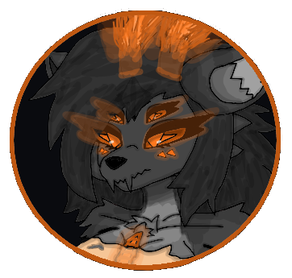
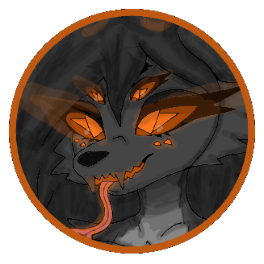

SheFur Weaponry Stuff - Вооружение Всякое ШеФур -
All of the - Stuff / Hive / Weapons / Clothing / Armors - Are hand created or created by SheFurrs. Всё - Всякое / Улей / Вооружение / Одежда / Броня - создаётся вручную или создаётся самими ШеФур.
Content - Контент -
- Weaponry - Main. Вооружение - Главное.
- Weaponry - Colds. Вооружение - Холодное.
- Weaponry - Firearms. Вооружение - Огнестрел.
- Weaponry - Additionals. Вооружение - Дополнительные.
- Clothing & Armor. Одежда и Броня.
- Medicine. Медицина.
- Stuff & Other. Всякое и Разное.
Weaponry - Main - Вооружение - Главное -
SheFurrs have four arms, which makes them extremely dangerous in combat, some specific castes like elites - have additional two limbs. An typical configuration: two main arms, melee weapons + two smaller arms, light firearms. This allows SheFur to fight in melee and ranged combat simultaneously. Weapon depends on: hive / colony size, hive / colony tactics, hive / colony culture, available materials, caste specialization. ШеФур имеют четыре руки, что делает их чрезвычайно опасными в бою, некоторые специфичнеские касты такие как элитные - имеют дополнительные две конечности. Типичная конфигурация: две основные руки, холодное оружие + две руки поменьше, лёгкий огнестрел. Это позволяет ШеФур сражаться одновременно в ближнем и дальнем бою. Оружие зависит от: размера улья / колоний, тактики улья / колоний, культуры улья / колоний, Доступных материалов, кастовой специализаций.
SheFurrs can fight: with two melee weapons, with melee + firearms, with four weapons at once. This makes them terrifying art-combat fighters. ШеФур могут сражаться: двумя холодными оружиями, холодное + огнестрельно, четырьмя оружиями одновременно. Это делает их ужасающими бойцами боевого искусства.
Who does not carry weapons: nurses, youngers, queens - all of them only take weapons in rare emergencies. Кто не носит оружие: няньки, молодняк, королевы - все они берут оружие только в редких чрезвычайных ситуациях.
IMPORTANT - all of SheFur weapon are not another living organisms, they are hand crafted by SheFurrs with materials. ВАЖНО - всё оружие ШеФур не живые организмы, оно создано вручную ШеФур из материалов.
Combat Art : Боевое Искусство :
For SheFurrs - weapon is more than just an object for killing or harm - it is an entire art, an aesthetic, a culture, and a beauty. Therefore, mastery in weapon handling among SheFurrs - is not a rare phenomenon. Для ШеФур - оружие это больше чем просто объект для убийства или вреда - это целое искусство, эстетика, культура, и красота. Поэтому, мастерство владения оружием среди ШеФур - не редкий феномен.
Safety & Friendly Logic - Безопасность и Дружественная Логика -
SheFur weapons does not affect them selfs. It means - that if both SheFur and firearm is from one hive genome then: ricochets never hit hive / colony members, venom will not work by hive membership, only on outsiders. Оружие ШеФур не работает на них самих. Это означает - что если ШеФур и огнестрельное оружие принадлежат одному геному улья то: рикошеты никогда не попадут в членов улья / колоний, яд не действует на членов улья, только на чужаков.
Weapons require SheFurrs resonance by hive membership, outsiders & other SheFurrs of other hive genomes cannot use them. Also outside SheFurrs can steel or equip a weapon from each other hives - but then they need to change & optimize this weapons for gaining new hive membership and genome, only works with SheFurrs species not other species. Оружие требует резонанса ШеФур по членсту улья, чужаки и другие ШеФур с другим геномом улья не могут использовать его. Внешние ШеФур могут украсть или взять оружие из других ульев - но тогда им нужно будет перенастроить и оптимизировать это оружие для получения нового членства улья и генома, это работает только с видом ШеФур и никаких других видов.
IMPORTANT - that SheFurrs instead of hive membership rule, can harm them selfs by their own weaponry. ВАЖНО - что ШеФур несмотря на правило членства улья, могут навредить себе собственным вооружением.
Resonance Hive Membership - Резонансное Членство Улья -
All SheFur firearms and some specific weaponry have their own little antennae like SheFurrs antennae. The coolest part - is that SheFurrs - can establish a direct resonance links with the individual carrying them, but only at close ranges. Все огнестрельные оружия ШеФур и некоторые специфические виды оружия имеют свой маленькие антенны как антенны ШеФур. Самая крутая часть - то что ШеФур могут устанавливать прямую резонансную связь с оружием которое они несут, но только на близких дистанциях.
This allows SheFurrs to literally feel: the firearm as a part of their own body, feel weapons feelings, coordinate and control it directly - which makes SheFur combat even more dangerous. Это позволяет ШеФур буквально чувствовать: огнестрельное оружие как часть собственного тела, чувства оружия, координировать и контролировать его напрямую - это делает бой ШеФур ещё более опасным.
Firearms - Огнестрел -
SheFur firearms incorporate: orange biolumen components, orange biolumen ammunition, and some orange biolumen parts. The weapons glow: faintly, especially in darkness. Огнестрельное оружие ШеФур включает: оранжевые биолюмен компоненты, оранжевые биолюмен боеприпасы, и некоторые оранжевые биолюмен части. Оружие светится: слабо, особенно в темноте.
Ammunition Type : Тип Боеприпаса :
SheFur firearms don't fire bullets. They fire: triangular needle-bullets, long, sharp, aerodynamic, and partially orange biolumen. These needles leave a bright orange biolumen trail behind them when fired. Огнестре ШеФур не стреляет обычными пулями. Оно стреляет: треугольными игло-пулями, длинными, острыми, аэродинамичными, и частично оранжевым биолюменом. Эти иглы оставляют яркий оранжевый биолюмен след при выстреле.
Needle-bullets deal purely physical and impact damages, but can be poisoned / venomed- meaning a needle-bullets deal massive damage, but purely physical. Игло-пули наносят чисто физический ударный урон, но могут быть отвралены / ядовиты - то есть игло-пули наносят огромный урон, но только физический.
Firearms Reloading : Перезарядка Огнестрела :
All SheFur firearms are reloads using their drum-type cartronics. The drum matches the colors of the SheFur weapons and contains circularly arranged cartridge assemblies - which are divided into 5-6 compartments. The cartronic is attached to it's weapon during reloading always on the right side - after which the weapon automatically and quickly absorbs the cartridge assemblies by rotating the cartridge drum - it's very fast. Весь огнестрел ШеФур перезаряжается с помощью барабанного картроника. Барабан в цветах оружия ШеФур и содержит круговые сборки патронов - разделённые на 5-6 секцей. Картроник прикрепляется к оружию всегда справой стороны - после чего автоматически и быстро поглощает патронные сборки вращая барабан - это довольно быстро.
After use - the cartronic devices are preserved and rarely discarded - therefore individuals carry a limited numbers of cartronic units. Nevertheless - cartridges for the cartronic are mades quity +- easily - so individual can produce some during battle. После использования - картроники сохраняются и редко выбрасываются - поэтому особи носят ограниченное количество картроников. Тем не менее - патроны для картроника изготавливаются довольно легко - поэтому особь может производить их даже во время боя.
Chemical-Acid : Химическая Кислота :
This is extremly dangerous both for any biological structures and hard materials, because it's flame is corrosive and destroing by chemical acid. It's not workin with hive memberships rule. Оно чрезвычайно опасно как для любых биологических структур и так для твёрдых материалов, потому что их пламя коррозионное и разрушающее химической кислотой. Они не работают по правилу улья.
The chemical-acid fire and fluids used in SheFurr's specific weaponry - functions perfectly even in liquids and in vacuum, because they do not depends on external conditions - only on the specific weapon itself. Химически кислотное пламя и ждикости используются в специфичных вооружения ШеФур - функционируют идеально даже в жидкостях и в вакууме, потому что они не зависят от внешних условей - только от самого оружия.
Firing Mechanism : Механизм Стрельбы :
The firing mechanism of SheFur firearms accelerates needle-bullets not with gunpowder, but with: thin, powerful, precisely-focused - gas jets that strike the projectile, causing it to accelerate violently and launch forward. Механизм стрельбы огнестреа ШеФур ускоряет игло-пули не порохом, а: тонкими, мощными, точно сфокусированными - газовыми струями которые ударяют по снаряду, воздействуя на него резким ускорением и запуском вперёд.
All of firearms shots by slightly arc traectories (Thats logical - because of physics). Все выстрелы огнестрельного оружия идут по слегка дуговой траекторий (Что логично - из-за физики).
Firing Modes - Режимы Стрельбы -
Every firearm has several modes: Каждый огнестрел имеет несколько режимов:
Standard Mode - Стандартный Режим -
One trigger pull - one shot: precise, quiet, efficient. Одно нажатие на спуск - один выстрел: точный, тихий, эффективный.
Rapid-Fire Mode - Режим Скоростной Стрельбы -
Hold the trigger - continuous fire, stops only when ammunition pack is depleted. Удержание спуска - непрерывная стрельба, останавливается только когда боекомплект заканчивается.
Impulse Mode - Импульсный Режим -
Spikes become impact-amplified, creates a powerful shockwave on hits. Ideal for: breaking armors, breaking materials, stunning targets. The firing rate in this mode are little slowly. Иглы становятся усиленными по ударному воздействию, создают мощную ударную волну. Идеально для: пробивания брони, разрушения материалов, оглушения целей. Скорострельность в этом режиме немного снижена.
Firearms Behavior - Поведение Огнестрела -
SheFur firearms are: silent (Not at all - but still very silent - because no powders & explodings, it sounds like something biological), capable of ricocheting needle-bullets at angles. Огнестрел ШеФур: тихий (Не полностью - но серавно очень тихий - потому что нет пороха и взрывов, звук скорее биологический), способны рикошетить игло-пулями под углами.
Equipped with two small antennaes like SheFurrs own, these allow the weapon to function only when held by a hive member SheFur - so it prevents enemy use. Оснащены двумя маленькими антеннами как у самих ШеФур, они позволяют оружиб работать только когда его держит ульевой член ШеФур - что предотврощает использование врагами.
And firearms have little homing, not like cheat - only very slightly. И огнестрел имеет небольшое самонаведение, не читерское - лишь очень слабое.
IMPORTANT - ricochet logic is: needle-bullets can bounce off surfaces, but only when the bullets not hited enemy - but hited walls - then works ricocheting with small homing. Never ricochets towards same hive members. ВАЖНО - логика рикошета такова: игло-пули могут отскакивать от поверхностей, но только если они не попали во врага - а попали в стены - тогда работает рикошет с лёгким самонаведением. Никогда не рикошетит в сторону членов своего же улья.
Reloading & Overheating - Перезарядка и Перегрев -
Firearms have: reload cycles, overheat thresholds, recoils. It's created for balance of SheWorld. Огнестрел имеет: циклы перезарядки, пороги перегрева, отдачу. Это создано для баланса ШеВорлд.
Environmental Performance - Работоспособность Окружающей Среде -
SheFur weapons work: underwater & in liquids, in cold, but slowly. They don't works good in vacuum. Underwater and in liquids: weapons still fire - but needles travel slower. Оружие ШеФур работает: под водой и в жидкостях, в холоде, но медленнее. Оно херово работает в вакууме. Под водой и в жидкостях: оружие всё ещё стреляет - но иглы летят медленнее.
Weaponry - Colds - Вооружение - Холодное -
General : Общее :
SheFurrs use cold weapons primarily with their two main arms. Using them in the smaller arms is possible - but uncommonly - because main arms provide better: strength, better precision, better control. ШеФур используют холодное оружие в первую очередь своими двумя основными руками. Использовать его меньшими руками возможно - но редко - потому что основные руки дают лучше: силу, точность, контроль.
Cold weapons are often coated with SheFurrs paralytic venom, applied through their saliva. Холодное оружие часто покрывается паралитическим ядом ШеФур, наносимым через из слюну.
1. SheFur Sword - 1. Меч ШеФур -
Design : Дизайн :
Handle wrapped in silk, blade made of dread metal, dark in color, long. With a unique curvature: slightly forward curve near the base, strongy backward curve near the tip. Рукоять обёрнута шёлком, клинок сделан из жуткого метала, темноватый в цветах, длинный. С уникальной кривизной: лёгкий изгиб вперёд у основания, сильный изгиб назад ближе к кончику.
Features : Особенности :
Front edge has sharpy hookies and tooth-like serrations, excellent at gripping and holding onto targets, designed for tearing and controlled cutting. Передняя кромка имеет острые крючки и зубчатые зазубрины, отлично захватывающие и удерживающие цели, оружие создано для разрывания и контролируемого резания.
Use : Использование :
Can be dual-wielded (One sword in each main hands). Может использоваться в двух руках одновременно (По одному мечу в каждой основной руке).
2. SheFur Spear - 2. Копьё ШеФур -
A versatile mid-range weapon. Универсальное оружие среднего радиуса.
Design : Дизайн :
Medium length, handle wrapped in silk, rear end has a small spike, front end has a long sharp dread metal spike, spike includes serrated teethy for improved grip. Средняя длина, рукоять обёрнута шёлком, задняя часть имеет маленький шип, передняя часть имеет длинный острый шип из жуткого метала, шип имеет зубчатые зазубрины для лушчего захвата.
Throwing System : Система Метания :
The spear attaches to a special vessel strapped to the SheFurrs main arms: Allows the spear to be thrown and automatically pulled back. Effective range: up to 12 meters. Копьё крепится к специальному сосуду который пристёгивается к основным рукам ШеФур: позволяя копью быть брошенным и автоматически возвращённым назад. Эффективная дальность: до 12 метров.
Ricochet Guidance : Рикошетное Наведение :
The spear has limited angle-based redirection: if thrown at a wall - it can bounce at an angle, often redirects toward the intended target. Копьё имеет ограниченную перенаправляемость по углу: если его бросить в стену - он может отскочить под углом, и часто перенаправиться в сторону конкретной цели.
Use : Использование :
Cannot be dual-wielded - only in one main hand. Usually carried on the back as secondary weapon. Нельзя использовать в двух руках одновременно - только в одной основной руке. Обычно носится на спине как вторичное оружие.
3. SheFur Daggers - 3. Кинжалы ШеФур -
Small & fast. Маленькие и быстрые.
Design : Дизайн :
Small triangular blades, perfectly straight and sharp, handle wrapped in silk, made from solid dread metal, dark in color. Небольшие треугольные клинки, идеально прямые и острые, рукоять обёрнута шёлком, изготовлен из цельного жуткого метала, тёмный в цветах.
Use : Использование :
Can be thrown (No returning mechanism), can be used in both main & additional hands, extremely fast and precise, usually carried at the waist as backup weapons. Может быть метаемым (Без механизма возврата), может использоваться как в основных руках так и в дополнительных, чрезвычайно быстрый и точный, обычно носятся на поясе как запасное оружие.
4. SheFur Whip - 4. Кнут ШеФур -
A flexible, segmented weapon. Гибкое, сегментированное оружие.
Design : Дизайн :
Handle wrapped in silk, central elastic spine made of cartilages, along the spine many sharp segmented blades, segments made of dread metal, segments include hookies for gripping. Рукоять обёрнута шёлком, центральный эластичный хребет сделан из хрящей, вдоль хребта расположенно множество острых сегментированных лезвий, сегменты сделаны их жуткого метала, сегменты имеют крючки для захвата.
Behavior : Поведение :
Extremely elastic. Designed to: wrap around targets, restrain, apply controlled pressure. Can automatically coil and tighten. Very fast and difficult to evade. Крайне эластичен. Создан для: обвивания вокруг цели, удерживания, контрлированное давление. Может автоматически сворачиваться и затягиваться. Очень быстрый и сложный для уклонения.
Use : Использование :
Usually carried at the waist as secondary weapon, can be holden only in one main hand. Обычно носится на поясе как вторичное оружие, может удерживаться только одной основной рукой.
5. SheFur Chakrams - 5. Чакрамы ШеФур -
The most beloved cold weapon of SheFurrs. Самое любимое холодное оружие Шефур.
Design : Дизайн :
Circular weapon, handle area wrapped in silk, central open hole, made of dread metal, dark in color. Blades: outer ring sharp hooked blades, inner ring small sharp blades. Круглое оружие, зона охвата обёрнута шёлком, в центре открытое круглое отверстие, изготовлен из жуткого метала, тёмных цветов. Лезвия: внешний кольцевой ряд острых крючкообразных лезвий, внутрений кольцевой ряд маленьких острых лезвий.
Combat Role : Боевая Роль :
Chakrams are ideal for: close combat, mid-range combat, and throwing or recocheting attacks. Чакрамы идеальны для: ближнего боя, среднего боя, и метательных или рикошетных атак.
Throwing Behavior : Поведение при Броске :
Thrown like a boomerang - returns to the host. Can ricochet off surfaces, can angle-target toward enemies, very fast, highly versatile. Бросаются как бумеранг - возвращаются к носителю. Могут рикошетить от поверхностей, могут направляться под углом к врагам, очень быстрые, высоко универсальные.
Use : Использование :
Worn at the waist. Can be used only in pairs by one chakram per main hands or second hands or both pairs by main & second hands. Носятся на поясе. Может быть использовано только парами по одному чакраму в каждой руке или сразу обе пары в основных и дополнительных руках.
Weaponry - Firearms - Вооружение - Огнестрел -
Light Weapons - Лёгкие Оружки -
Light weapons are designed for the two smaller arms allowing SheFurrs to combine melee and ranged combat at the same times. They are: compact, fast, and optimized for close-to-mid-range engagements. Лёгкие оружки созданы для двух маленьких рук позволяя ШеФур совмещать ближний и дальний бой одновременно. Оно: компактное, быстрое, и оптимизировано для ближних и средних дистанцей.
1. SheFur Pistol - 1. Пистолет ШеФур -
General Description : Общее Описание :
A medium-sized firearm. Handle wrapped in silk, handle is uneven - organic in shape. Constructed from: cartilage, leather-like materials. Has a small antennae for resonance connection with host membership. Среднего размера огнестрел. Рукоять обёрнута шёлком, сама рукоять неровная - органическое формы. Сконструирована из: хрящей, материалов похожих на кожу. Имеет маленькие антенны для резонансного соединения с носителем членом улья.
Combat Role : Боевая Роль :
Effective at close and mid-range. Эффективен на ближних и средних дистанциях.
Use : Использование :
Commonly carried in both smaller arms, usually two pistols at once. The standard pistol is the most universal light weapon of SheFurrs. Обычно носится в обеих маленьких руках, обычно два пистолета одновременно. Стандартный пистолет это самое универсальное лёгкое оружие ШеФур.
2. SheFur Elite Pistol - 2. Элитный Пистолет ШеФур -
General Description : Общее Описание :
Also a light-sized firearm, but heavier and more powerful than common SheFur pistol. Handle wrapped in silk. Looks like the standard pistol - but: slightly larger, with a longer barrel, reinforced with more Dread Metal. Has a medium antennae for resonance connection with host membership. Также лёгкий огнестрел, но тяжелее и мощнее чем обычный пистолет ШеФур. Рукоять обёрнута шёлком. Выглядит как стандартный пистолет - но: немного больше, с более длинным стволом, усилен большим количеством жуткого метала. Имеет средние антенны для резонансного соединения с носителем членом улья.
Abilities : Способности :
The elite pistol can: pierce straight through a target, and then the reinforced needle-bullet ricochets and continues toward another enemies. This makes it extremely effective in dense combat or against armored opponents. Элитные пистолет может: пробивать цель насквозь, после чего усиленная игло-пуля рикошетит и продолжает движение к другим врагам. Это делает его чрезвычайно эффективным в плотном бою или против бронированных противников.
Use : Использование :
Typically carried in both smaller arms, two pistols total. Preferred by: elite scouts / elite warriors - elites. Обычно носится в обеих руках поменьши, всего два пистолета. Предпочитается: элитными разведчицами / элитными воительницами - элитными.
Medium Weapons - Средние Оружки -
1. SheFur SMG - 1. ПП ШеФур -
General Description : Общее Описание :
A lightweight, medium-sized, used for rapid close-to-mid-range combat. Handle wrapped in silk, uneven, small stock for stability. Has a medium antennae for resonance connection with host membership. Лёгкое, среднего размера, используемое для быстрого ближнего и среднего боя. Рукоять обёрнута шёлком, неровная, маленький приклад для стабильности. Имеет средние антенны для резонансного соединения с носителем членом улья.
Use : Использование :
Fast firing, can be mounted on any arm, main or secondary. Maximum up to four SMGs at once (Two main arms + two smaller arms). Быстрая стрельба, может быть установлено на любую руку, основную или дополнительную. Максимум до четырёх ПП одновременно (Две основные руки + две руки поменьше).
2. SheFur Rifle - 2. Винтовка ШеФур -
General Description : Общее Описание :
A lightweight, medium-length rifle, designed for precision and penetration. Handle wrapped in silk, small stock, two long barrels like spreaded two parts. Built-in aiming structures (No optical sights needed, SheFurrs vision is superior). Has a medium antennae for resonance connection with host membership. Лёгкая, средней длинны винтовка, созданная для точности и пробивания. Рукоять обёрнута в шёлк, маленький приклад, два длинных ствола расходящихся как две части. Встроенные структуры прицеливание (Оптические прицелы не нужны, зрение ШеФур превосходно). Имеет средние антенны для резонансного соединения с носителем членом улья.
Abilities : Способности :
Fires strengthened needle-bullets, capable to penetrate through targets, medium firing speed. Does not have rapid-fire mode. Стреляет усиленными игл-пулями, способными пробивать цели насквозь, средняя скорострельность. Не имеет режима скоростной стрельбы.
Use : Использование :
Can only be used on main arms, up to two rifles (One per main arm). Может использоваться только основными руками, максимум две винтовки (По одной на каждую основную руку).
3. SheFur Assault Rifle - 3. Штурмовая Винтовка ШеФур -
Core weapon of SheFur medium firearms. Основное оружие средних огнестрелов ШеФур.
General Description : Общее Описание :
A medium-sized weapon that attaches directly to the SheFur main arms, becoming like a part of the limb. No handle, no stock, long structure extending almost to the elbow. Barrel formed by two jaw-like growths: upper and lower, with hook-like teeth, the jaw opens wider the longer the weapon fires. Has a medium antennae for resonance connection with host membership. Оружие среднего размера которое крепится напрямую к основным рукам ШеФур, становясь как будто частью конечности. Нет рукояти, нет приклада, длинная структура простирающаяся почти до локтя. Ствол формируется двумя челюсте-подобными выростами: верхним и нижним, с крючкообразными выростами, челюсть раскрывается шире чем дольше оружие стреляет. Имеет средние антенны для резонансного соединения с носителем членом улья.
Abilities : Способности :
Medium firing speed, strengthened ammunition. Special charge mode: weapon stores bullets, then releases all the entire magazine extremely fast. Средняя скорострельность, усиленные боеприпасы. Особый режим заряда: оружие накапливает игло-пули, затем выпускает весь магазин с экстремальной скоростью.
Use : Использование :
Only on main arms, up to two assault weapons (One per main arm). Только на основных руках, максимум до двух штурмовых оружек (По одной на каждую основную руку).
4. SheFur Shock Assault Rifle (Experimental) - Штурмовая Электро-Винтовка ШеФур (Экспериментальная) -
General Description : Общее Описание :
An experimental version of the standard assault rifle. Blue and cyan colorations, attaches to the main arms, similar jaw-barrel structure. Has a medium blue antennae for resonance connection with host membership. Экспериментальная версия стандартной штурмовой винтовки. Синие и голубые окраски, крепится к основным рукам, структура ствола похожа на челюсте-подобную форму. Имеет средние антенны для резонансного соединения с носителем членом улья.
Abilities : Способности :
Fires electric energy clusters instead of needle-bullets, medium firing speed. Can charge energy and release a short lightning-like discharge. If misused, the electrical discharge can shock the wielder. Стреляет электрическими энергетическими кластерами вместо игло-пуль, средняя скорострельность. Может заряжать энергию и выпускать короткий молние-подобный разряд. При неправильном использований, электрический заряд может ударить самого носителя.
Use : Использование :
Only on main arms, up to two shock weapons (Per one by main arms). Только на основных руках, максимум до двух электро-винтовок (По одной на каждую основную руку).
5. SheFur Elite Assault Rifle - 5. Элитная Штурмовая Винтовка ШеФур -
General Description : Общее Описание :
The elite version of the standard assault rifle. Slightly larger, reinforced with dread metal plates, more ornate and aggressive design. Has a medium antennae for resonance connection with host membership. Элитная версия стандартной штурмовой винтовки. Немного больше, усилена пластинами из жуткого метала, более декоративный и агрессивный дизайн. Имеет средние антенны для резонансного соединения с носителем членом улья.
Abilities : Способности :
Fires like the standard assault weapon. Have additional psyonic wave damage: needle-bullets emit psyonic shockwaves - affects enemy cognition, causes: disorientation, confusion, or mental disruption. Does not directly-strongy affects SheFurrs of the same hive by hive memberships. Affects SheFurrs from other hives & genomes much more strongly. Стреляет как стандартная штурмова оружка. Имеет дополнительный псионический урон: игло-пули создают псионические ударные волны - которые влияют на когнитивные функций врага, вызывают: дезориентацию, путаницу, или ментальные нарушения. Не оказывает сильного воздействия на ШеФур того же улья благодаря членству улья. Сильнее воздействует на ШеФур из других ульев и геномов.
Use : Использование :
Only on main arms, up to two elite assault weapons (Per one by main arms). Только на основных руках, максимум до двух элитных штурмовых оружек (По одной на каждую основную руку).
Heavy Weapons - Тяжёлое Оружие -
1. SheFur Elite Rifle - 1. Элитная Винтовка ШеФур -
General Description : Общее Описание :
A heavy, high-power firearm used by elites. Unlike lighter weapons, it: has no handle, has no stock, attaches directly to the SheFurrs main arm becoming like a part of the limb, extends almost to the elbow, is long, rigid, and reinforced. Has a medium antennae for resonance connection with host membership. Тяжёлый, мощнейшый огнестрел используемые элитными. В отличий от лёгких оружек, она: не имеет рукояти, не имеет приклада, крепится напрямую к основной руке ШеФур становясь как будто частью конечности, простирается почти до локтя, дилнное, жёское, и усиленное. Имеет средние антенны для резонансного соединения с носителем членом улья.
Firing Mechanism : Механизм Стрельбы :
The weapon reaches firing threshold - then the weapon releases one extremely powerful needle-bullet. Оружие достигает порога выстрела - после чего выпускает одну крайне мощную игло-пулю.
Projectile Characteristics : Характеристики Снаряда :
The needle-bullet is: massive, hyper-dense, designed for extreme penetration. It can pierce: an enemy, a wall, armored vehicles, heavy structures. This is a powerful single-shoting weapon. Игло-пуля: массивкая, сверх-плотная, создана для чрезвычайного пробивания. Она может пробить: врага, стену, бронированный транспорт, тяжёлые структуры. Это мощное одно-стреляющее оружие.
Abilities : Способности :
Very slow firing speed, extremely high impact, fires only in strengthlly arc trajectories. Очень медленная скорострельность, крайне высокий ударный эффект, стреляет только по сильным дуговым траекториям.
Use : Использование :
Can be mounted only on one main arm, never dual-wielded - but other main hand can help griping. Used by elites. Может быть установлена только на одну основную руку, никогда не используется в двух руках - но другая основная рука может помогать удерживать и срабилизировать. Используется элитными.
Weaponry - Additions - Вооружение - Дополнительные -
1. Chemical-Acidic Flamethrower - 1. Химически Кислотный Огнемёт -
General Description : Общее Описание :
A medium but lightweight weapon that: attaches directly to the main arm, has no handle and no stock, becomes like a part of the limb, has an elongated barrel, contains fluid-filled sacs-bubbles along the sides, coloration: yellowish, orangie, darks, and acidic tones. Has a medium antennae for resonance connection with host membership. Среднее но лёгкое оружие которое: крепится напрямую к основной руке, не имеет рукояти и приклада, становится как будто частью конечности, имеет удлинённый ствол, содержит по бокам мешки-пузыри наполенные жидностью, окраска: жёлтоватая, оранжевенькая, тёмные, и кислотные тонна. Имеет средние антенны для резонансного соединения с носителем членом улья.
Firing Modes : Режимы Стрельбы :
Fluid shot mode: fires a clump of corrosive bio-fluid. Режим жидкости: стреляет сгустком коррозивной био-жидкости.
Chemical-acidic flamethrower mode: instead of shots, emits a continuous stream of chemical-acidic flame, extremely dangerous at close ranges and medium ranges. Режим химически кислотного огнемёта: вместо выстрелов, выпускает непрервыный поток химически кислотного пламени, крайне опасный на ближних и средних дистанциях.
Limitations : Ограничения :
Requires biofuel to function. Требует биотопливо для работы.
Use : Использование :
Can be mounted only on one main arm. Can hard-damage it's own host using this weapon. This weapon - is not working by rule hive membership, can harm any SheFurrs. Может быть установлен только на одну основную руку. Может нанести тяжёлый урон собственному носителю. Это оружие - не работает по правилу членства улья, может ранить любых ШеФур.
2. Chemical-Acidic Launcher - Химически Кислотный Запускатель -
General Description : Общее Описание :
A light, short-barreled mortar that: attaches to a secondary arms, has no handle or stock, contains chemical-acidic fluid sacs, coloration: darks, yellowish, orangie, and bright acidic tones. Has a small antennae for resonance connection with host membership. Лёгкий, короткоствольный миномёт который: крепится к дополнительным рукам, не имеет рукояти и приклада, содержит мешки с химически кислотной жидкостью, окраска: тёмные, жёлтоватые, оранжевенькие, и яркие кислотные тонна. Имеет маленькие антенны для резонансного соединения с носителем членом улья.
Firing Behavior : Поведение Стрельбы :
Must be fired in an high arcs, often upward. Launches chemical-acidic chunks, chuncks detonate chemicaly on impacts, explosion includes burning corrosive reactions. Должен стрелять по высоким дугам, часто вверх. Запускает химические кислотные сгустки, сгустки химически детонируют при ударе, взрыв включает горящие коррозионные реакций.
Limitations : Ограничения :
Requires biofuel to function. Требует биотопливо для работы.
Use : Использование :
Only one per secondary arm - as an additional weapon. Can hard-damage it's own host using this weapon. This weapon not working by rule hive membership, can harm any SheFurrs. Только один запускатель на одну дополнительную руку - как дополнительное оружие. Может нанести тяжёлый урон собственному носителю. Это оружие не работает по правилу членства улья, может ранить любых ШеФур.
3. SheFur Grenades - 3. Гранаты ШеФур -
Appearance : Внешне :
Shaped like a 3D hexagonal fungal mass, covered in many small holies. Each grenade type has her own coloration, size similar to a large or heavy grenades, usually carried at the waist, and usually throwns with secondary arms - but also can be thrown by any arm. Имеют форму 3д гексагональных грибных масс, покрытых множеством маленьких отверстий. Каждый тип гранаты имеет свою собственную окраску, размер как у больших или тяжёлых гранаь, обычно носятся на поясе, чаще всего бросаются дополнительными руками - но могут быть брошены любой рукой.
Control : Контроль :
Control of all grenades: the wielder host can choose - activation time and detonation moment - by resonance links working in close ranges. Управление всеми гранатами: носитель может выбирать - время активаций и момент детонаций - через резонансную связь работающую на близких дистанциях.
Types - Типы -
1. Chemical-Acidic Grenade - 1. Химически Кислотная Граната -
Same payload as the mortar's chemical-acidic shot, created by biofuel components. Not works by rule hive membership, can harm any SheFurrs. Имеет тот же заряд что и химически кислотная мортирка, создаётся из биотопливных компонентов. Не работает по правилу членства улья, может ранить любых ШеФур.
2. Electro-Grenade - 2. Электро-Граната -
Functions like an EMP, can discharge electronics & confuse. Not works by rule hive membership, can harm any SheFurrs. Функционирует как ЭМИ заряд, может разряжать электронику и вызывать путаницу. Не работает по правилу членства улья, может ранить любых ШеФур.
3. Psy-Grenade - 3. Пси-Граната -
Very dangerous, disrupts minds of all living beings nearby - like hard-confuse or powerful headaches & other ways. Not works by rule hive membership, very dangerous to all SheFurrs. Very hard to craft for balance. Очень опасная, нарушает работу разума всех живых существ поблизости - вызывает сильную путаницу или сильные головные боли и другие эффекты. Не работает по правилу членства улья, очень опасна для всех ШеФур. Очень трудна в изготовлений для баланса.
4. Elite Psy-Grenade - 4. Элитная Пси-Граната -
Extremaly dangerous, far more powerful, must be thrown far away to avoid self-harm, anihilates the nerve systems in organism. Not works by rule hive membership, extremally dangerous to all SheFurrs. Extremally hard to craft for balance. чрезвычайно опасная, намного мощнее обычной, её нужно бросать очень далеко чтобы избежать само-повреждения, уничтожает нервные системы организмов. Не работает по правилу членства улья, чрезвычайно опасна для всех ШеФур. Крайне трудна в изготовлений для баланса.
5. Needle-Grenade - 5. Игло-Граната -
Instead of shrapnel, releases a huge amounted burst of needle-spikes - that works like standard needle bullets of SheFurrs. Вместо осколков, выпускает огромный объём игло-шипов - которые работают как стандартные игло-пули ШеФур.
4. SheFur Mines - 4. Мины ШеФур -
Appearance : Внешне :
Similar to grenades - but have hexagonal disk-like form. Attaches between surfaces when thrown or may just be attached like standard trap-mine. Don't explodes when thrown - instead create sticky web-like lines, touching them will trigger the explosion. Carried at the waist, deployed with secondary arms - but can be deployed by any arm. Похожи на гранаты - но имеют гексагональную диско-образную форму. При броске прикрепляются между поверхностями или могут быть установлены как обычная мина-ловушка. Не взрываются при броске - вместо этого создают липкие паутинные линий, прикосновение к ним вызывает детонацию. Носятся на поясе, устанавливаются дополнительными руками - но могут быть установлены любой рукой.
Craft & Behavior : Создание и Поведение :
Mines are created from special local materials from the biosphere - that possess complete camouflage properties. Such materials cannot be seen: in ultraviolet, infrared, night vision, thermal imaging, or even through chemical signatures. The only thing that cannot be hidden - is deep, emotional, soul, spectrums and therefore the SheFurrs can see the mines with their Romb-eye. This camouflage materials are not rare, but uncommon and have some difficulities. Мины создаются из специальных местных материалов биосферы - которые обладают камуфляжной маскировкой. Такие материалы невидимы: в ультра-фиолете, инфра-красном, ночном видений, тепло-визорах, или даже по химическим сигнатурам. Единственное что невозможно скрыть - это глубокие, эмоциональные, душевные, спектры и поэтому ШеФур могут видеть мины своим Ромб-глазом. Эти камуфляжные материалы не редкие, но нечастые и имеют определённые сложности.
Control : Контроль :
The wielder host can choose: activation time and detonation moment - by resonance links. They not triggers by hive membership - but also if triggered, can harm any SheFurrs. Носитель может выбирать: время активаций и момент детонаций - через резонансные связи. Мины не реагируют на правило членства улья - и при срабатываний, могут ранить любых ШеФур.
Types - Типы -
Same five types as grenades: chemical-acidic, electro, psy, elite psy, needle-spikes. Те же пять типов что и гранаты: химически кислотная, электро, пси, элитная пси, игло-шипная.
5. SheFur Turrets - 5. Турели ШеФур -
General Description : Общее Описание :
Stationary weapons that: can be attached to any surface, have a mounting base, operate autonomously, can also be manually controlled by SheFurrs resonance links, always have two antennae at the back similar to SheFurr's antennae - but longer and used for resonance & targeting. They work strenghtly directly by hive membership rule. Стационарные оружки которые: могут быть прикреплены к любой поверхности, имеют базу прикрепления, работают автономно, могут также управляться в ручную через резонансные связи ШеФур, всегда имеют две антены сзади похожие на антены ШеФур - но длиннее и используются для резонанса и наведения. Они работают строго по правилу членства улья.
Limitations : Ограничения :
"Little bit" heavy for one individual SheFur to carry freely on it's lafette, usually transported by team or installed permanently. Chemical-acidic turret needs bio-fuel to function effectively. "Немножечко" тяжёловатые для одной особи ШеФур чтобы свободно переносить на лафете турели, обычно транспортируются командой или устанавливаются сразу. Химически кислотная турель нуждается в биотопливе для эффективной работы.
Use : Использование :
Free to use by hive membership rule. Can be a defensive attached turrets or be like lafetted turrets for transportation. Свободно используются по правилу членства улья. Могут быть оборонительными стационарными турелями или как лафетные турели для транспортировки.
Types - Типы -
1. Assault Turret - 1. Штурмовая Турель -
Functions like a larger deformed version of the SheFurrs assault rifle, longer barrel, high sustained fire. Функционирует как увеличенная деформированная версия штурмовой винтовки ШеФур, более длинный ствол, высокая скорострельность.
2. Chemical-Acidic Turret - 2. Химически Кислотная Турель -
Functions like a larger launcher or flamethrower, fires corrosive flames or switches mode to grenade-chunk projectiles. This type is more rare - because of it's danger. Функционирует как большый запускатель или огнемёт, стреляет коррозионным пламенем или переключается в режим химически кислотных сгустков-гранат. Этот тип более редкий - из-за своей опасности.
3. Psyonic Turret - 3. Псионическая Турель -
Very rare, used mainly inside the hives / colonies (That's nearby safe - because this turrets working by hive membership rule), fires needle-bullets with psyonic pulses. Очень редкая, используется главным образом внутри ульев / колоней (Это относительно безопасно - потому что турели работают по правилу членства улья), стреляет игло-пулями с псионическими импульсами.
Clothing & Armor - Одежда и Броня -
General : Главное :
SheFur clothing: does not depends on winter or summer, is entirely based on personal preferences, is optional, and most individuals remove everything during rest or caress. Never covers the feets - because of digitigrade, but may cover the legs. Combats must wear anything protective even if minimal. Eggs, larvae, and cocoons(Pupae) never wear clothings - because they need to develop by stages in: eggs / combs / cocoons. Clothing is: cultural, functional, beauty, personal, and caste-specific. Одежда Шефур: не зависит от зимы или лета, полностью основана на личных предпочтениях, необязательна, и большинство особей снимают всё во время отдыха или ласки. Никогда не закрывают ступни - из-за дигитиградности, но может закрывать ноги. Боевые особи обязаны носить любую защиту даже минимальную. Яйца, личинки, и коконы(Куколки) никогда не носят одежду - потому что им нужно развиваться по стадиям: яйца / соты / коконы. Одежда это: культурное, функциональное, эстетическое, личное, и кастовое.
SheFurrs basicly wears the base clothing: ragged silk strips made from silk and leftover cocoon material, tears, and uneven edges, usually dirty-white / light-orange. This is the most common everyday clothing inside the hives / colonies - like underwear for all individuals and castes. ШеФур обычно носят базовую одежду: рваные полосы шёлка сделанные из шёлка и остатков коконного материала, с разрывами, и неровными краями, обычно грязновато-белые / лёгко-оранжевые. Это самая распространённая повседневная одежда внутри ульев / колоней - ка книжнее бельё для всех особей и каст.
Accessories : Аксессуары :
Accessories is uncommon - but may include: metal earrings, arm-bands, long socks worn under armor or clothing, and a darky muzzle - but rarely personaly and basicly used as a part of isolation punishment. Аксессуары редки - но могут включать: металические серьги, руковички, длинные носки которые надеваются под броню или одежду, и тёмный намордник - но редко лично и обычно используется как часть наказания изоляцией.
Accessories and some clothing can be dyed in different colors. Аксессуары и часть одежды может быть окрашена в разные цвета.
Clothing of the Arts (Combat Styles) - Одежда Боевых Искусств (Стилей Боя) -
These are the three major arts of combat clothing, depending on the personaly chosen fighting style. Эти три основные школы боевой одежды, зависящие от личного выбранного боевого стиля.
Stealth & Agility - Скрытность и Ловкость -
Worn by: scouts, warriors, and all who love lightness combat. Носится: разведчицами, воительницами, и всеми кто любит стиль лёгкости боёвки.
Characteristics: open, flexible, fast, lightweight, usually dark, tight-fitting, torn, uneven, asymmetrical, matching hives and SheFurrs coloration. Often includes a mask covering the muzzle. Характеристики: открытая, гибкая, быстрая, лёгкая, обычно тёмная, обтягивающая, рваная, неровная, асимметричная, идёт в цвета окраски ульев и ШеФур. Часто включает маску закрывающую морду.
Materials: leather, shed skin, silk, but mostly leather. Материалы: кожа, сброшенная кожа, шёлк, но в основном кожа.
Medium Armor - Средняя Броня -
Worn by: combat individuals who choose a balance between agility and armor. Носится: боевыми особями которые выбирают балансирование между ловкостью и защитой.
Characteristics: open - but heavier than Lightness, dark colors matching SheFurrs palette, light, sharp, complex in shape, tight-fitting, a hybrid of protection and mobility. Характеристики: открытая - но тяжелее чем лёгкости, тёмные цвета под палитру ШеФур, лёгкая, острая, сложная по форме, обтягивающая, это гибрид защиты и мобильности.
Materials: dread metal, leather, leather is torn and uneven, silk. материалы: жуткий метал, кожа, кожа рваная и неровная, шёлк.
Heavy Armor - Тяжёлая Броня -
Worn by: individuals who choose full armor and defense, mostly heavy likes. Носится: особями которые выбирают полную броню и защиту, в основном любителям тяжести.
Characteristics: open - but heavy, dark colors, consists of - many plates, sharp edges, complex forms and often includes - dread metal shield also sharp, sharp dread metal helmet. This is the most protective combat attire. Характеристики: открытая - но тяжёлая, тёмные цвета, состоит из - множества пластин, острых краёв, сложных форм и может включать - щит из жуткого метала также острый, острый шлем из жуткого метала. Это самая защищённая боевая одежда.
Material: dread metal mostly. Материал: в основном жуткий метал.
Elite Clothing - Одежда Элитных -
Elite individuals wear the same three varients. Элитные особи носят те же три варианта.
But with elite enhancements: more serious refined designs, armor with scar-patterns, improved materials. Dread metal glows with bright orange psyonic biolumen symbols. Но с элитными улучшениями: более серьёзные утончённые дизайны, броня со шрамовыми узорами, улучшенными материалами. Жуткий метал светится яркими оранжевыми псионическими биолюмен символами.
Royal's Clothing - Королевские Одежды -
Princesses are exceptional and have unique attire. Принцессы исключительные и имеют уникальный наряд.
Their clothing is: smooth, not torn. Made from: silk, leather, specially crafted fabric. The fabric shimmers - because it contains biolumen that is: gentle, light, elegant. Princess clothing is the most refined in the hive. Их одежда: гладкая, не ровная. Сделана из: шёлка, кожы, специальной созданной ткани. Ткань мерцает - потому что содержит биолюмен который: нежный, лёгкий, элегантный. Одежда принцесс самая отличающаяся в улье.
The queen does not wear clothing - she has no needs for it. Королева не носит одежду - её это не нужно.
Medicine - Медицина -
SheFur medicine is highly advanced. It combines natural regenerations, hives / colonies - sterility, organic materials, and living augmentations. Медицина ШеФур довольно развитая. Она сочетает естественную регенерацию, стерильность ульев / колоней, органические материалы, и живые аугментаций.
Basic Medical Practices : Базовые Медицинские Практики :
Silk bandages made from larvae / cocoon silk - strong, flexible, sterile. Leather-Silk straps made from shed skin + silk. Licking treatments - natural SheFurrs medical method. Blood regeneration, SheFurrs blood naturally replenishes itself slowly. And symbionts inside the body. Шёлковые бинты сделанные из шёлка личинок / коконов - прочные, гибкие, стерильные. Кожано-шёлковые ремни сделанные из сброшенной кожи + шёлка. Лечение облизованием - естественный медицинский метод ШеФур. Регенерация крови, кровь ШеФур естественно медленно восстанавливается. И симбионты внутри тела.
Advanced Medicine & Artificial Anatomy : Продвинутая Медицина и Искусственная Анатомия :
Advanced SheFurrs medicine - is rare, but extremely sophisticated. It focuses on living prosthetics and biological integrations. Appears alive, body does not rejects. Limitations: weaker than natural - but still gives the individual a chance to function normaly. Продвинутая медицина ШеФур - редкая, но крайне сложная. Она сосредоточена на живых протезах и биологических интеграциях. Они выгледят живыми, тело не отторгает их. Ограничения: слабее чем естественные - но всё равно дают особи возможность функционировать нормально.
SheFurrs can replace or augment: organs, tissues, limbs, antennae, biological systems. At some costs by resources. All replacements are: living, integrated well, far more advanced than anything other species can create. These procedures are rare - but exist. ШеФур могут заменить или усилить: органы, ткани, конечности, антенны, биологические системы. С некоторой стоимостью по ресурсам. Все замены: живые, хорошо интегрируются, и намного более продвинутые чем все другие виды могут сделать. Эти процедуры редкие - но существуют.
Stuff & Other - Всякое и Разное -
Environmental Resistance : Экологическая Устойчивость :
Materials & structures created by SheFurrs are: highly resistant to acids, resistant to chemical impurities, resistant to environmental corrosions. This is - because their world is harsh and chemically aggressive. Материалы и структуры созданные ШеФур обладают: высокой устойчивостью к кислотам, устойчивостью к химическим примесям, устойчивостью к экологической коррозий. Это - потому что их мир суров и химически агрессивен.
1. Dread Metal - 1. Жуткий Метал -
Dread metal is a hybrid material created by the hives / colonies / SheFurrs. It is a mixture of: biological components, complex extremely durable materials and a small amount of the psyonic biolumen. Жуткий метал это гибридный материал созданный ульями / колониями / ШеФур. Он представляет собоей смесь: биологических компонентов, сложных чрезвычайно прочных материалов и небольшое количество псионического биолюмена.
Appearance : Внешне :
Dark-gray or darky, sharpy rigid texture, sometimes contains embedded speckles, covered in brighty orange psyonic biolumen patterns - but in rare specific chunks. These patterns form a symbolic language of the hive, completely incomprehensible to outsiders. Тёмно-серый или тёмненький, жёская острая текстура, иногда содержит встроенные вкрапленки, покрыт ярко-оранжевыми псионическими биолюмен узорами - но только на редких специфических участках. Эти узоры формируют символический язык улья, полностью непонятный чужакам.
Sense : Ощущения :
To the touch it's something hard-sharpy, but elastic, and slightly warmy, sometimes with speckles and dents. It's smell has a strange metallic-fungal scent with something chemically-acidic mixed in. На ощупь это как твёрдо-острый, но слегка эластичный, и немного тёплый, иногда с вкрапленками и вмятинками. Запах странный металически-грибной с чем-то химически кислотным смешанным внутри.
Behavior : Поведение :
Dread metal is: super-durable, slightly elastic (Can flex without breaking), intimidating in appearance, psyonically resonancing with hive / SheFurrs, and self-repairing. If damaged, the metal - slowly regrows, restores its shapes. This regeneration is slow, but reliable. Жуткий метал: сверх-прочный, слегка эластичный (Может сгибаться не ломаясь), устрашающий по виду, псионически резонирует с ульем / ШеФур, и само-восстанавливающийся. Если повреждён, метал - медленно отрастает, восстанавливая свою форму. Эта регенерация медленная, но надёжная.
Growth : Рост :
Dread metal can grow and expand - but: grows very slowly, it grows upward forming: spikes, towers, or jagged protrusions. It requires a special symbiont based fluid to begin growth, this fluid is regurgitated by SheFur individuals - the fluid is a trigger that activates the growth process from the fluid it starts to grow. Without this fluid - the metal will no alive in world. Dread metal is symbiosis of SheFurrs and some symbionts. Жуткий метал может расти и проростать - но: растёт очень медленно, растёт вверх формируя: шипы, башни, или зубчатые выступы. Для начала роста требуется специальная симбионтная жидкость, которую особи ШеФур регургитируют - эта жидкость является триггром который запускает процесс роста из жидкости метал и начинает свой рост. Без этой жидкости - метал не будет существовать в мире. Жуткий метал это симбиоз ШеФур и некоторых симбионтов.
Use : Использование :
Dread metal is used for: walls, towers, some armors & heavy armors, some weapons, some tools, some traps, structural supports & infrastructures, and some more. It's one of the most valuable materials on the planet created by SheFurrs themselves. Жуткий метал используется для: стен, башен, некоторых брониках и тяжёлой броне, некоторых оружек, некоторых инструментов, некоторых ловушек, структурных опор и инфраструктур, и многое многое другое. Это один из самых ценных материалов на планете создаваемый самими ШеФур.
2. SheFur Fungus - 2. Гриб ШеФур -
The fungus is actually more a symbiont of the SheFurrs - created through the SheFurrs own genetic engineering, rather than a separate symbiotic organism. In other words, it is an evolutionary achievement of the SheFur themselves. Гриб на самом деле является скорее симбионтом ШеФур - созданным через их же собственную генетическую инженерию, а не отдельным симбиотическим организмом. Другими словами, это эволюционное достижение самих ШеФур.
Growth : Рост :
SheFur fungus is grown in special chambers inside the hives / colonies. The fungus grows exclusively on SheFur feces - because of symbiosis: feces provide a trigger growth, the fungus cannot reproduce or spread or start it's life without this substrate. This fungus exists only inside SheFur hives / colonies. After the initial stage - it can continue growing without further feedings. In large farms - the fungus can grow upwards then breaks through the hive's / colonie's outer roof layers and form external fungal hills visible from outside the hive / colony. Гриб ШеФур выращивается в специальных камерах внутри ульев / колоней. Он растёт исключительно на фекалиях ШеФур - из-за симбиоза: фекалий дают триггер роста, гриб не может размножаться или распространяться или начать жизнь без этого субстрата. Этот гриб существует только внутри ульев / колоней ШеФур. После начальной стадий - он может продолжать расти без дальнейших подкормок. В больших фермах - гриб может расти вверх затем прорываться через внешние слой потолка улья / колоний и формировать внешние грибные холмы видимые снаруже.
Appearance : Внешне :
The fungus looks like: mass of dirty-whitish organic tissue, small embedded speckles, faint white or purple weaky biolumen barely noticeable unless in darkness. Гриб выглядит как: масса грязновато-беловатой биологической ткани, маленькие встроенные вкрапления, тусклый белый или фиолетовый слабенький биолюмен едва заметный кроме как в темноте.
Behavior : Поведение :
The fungus lives only near SheFur environments, it is very undemanding and the only things it requires are: a SheFur environment and it's native SheWorld atmosphere. The fungus releases more cold and moisture during excessive heat, and more warmth during excessive cold. In winter - the external fungal towers basicaly do not survive and dies off, drying and freezing, but inside the hive / colony - the fungus remains completely fine. Гриб живёт только рядом с средой ШеФур, он крайне неприхотлив и единственные вещи которые ему нужны это: среда ШеФур и родная атмосфера ШеВорлд. Гриб выделяет больше холода и влаги при чрезмерной жаре, и больше тепла при чрезмерном холоде. Зимой - внешние грибные башни обычно не выживают и погибают, высыхая и замерзая, но внутри улья / колоний - гриб остаётся полностью в порядке.
Sense : Ощущение :
To the touch it's: soft, elastic, and slightly warmy, but also a bit unpleasantly slimy. It's smell has a strong fungal-milky-metallic scent mixed with the smell of SheFurrs feces. It's taste has a strong fungal-milky-metallic flavor with strange playfuly undertones. На ощупь он: мягкий, эластичный, слегка тёплый, но также немного неприятно слизистый. Его запах имеет сильный грибно-молочный-металический с примесью запаха фекалей ШеФур. Его вкус имеет сильный грибно-молочный-металический со странными игривыми оттенками.
Use : Использование :
The fungus is a very nutritious and light food source, but it's not edible for anyone except the SheFurrs - as it causes mild amnesia and sometimes severe hallucinations, and also increases hunger instead of restoring anything. The SheFurrs use the fungus not only as a food source - but also in: medicine, certain materials and components, as poisons for weapons, and for acclimatization and stabilization of the hives / colonies. Гриб очень питательный и лёгкий источник пищи, но не съедобен для кого-либо кроме ШеФур - так как вызывает лёгкую амнезию и иногда сильные галлюцинаций, и также усиливает голод вместо того чтобы что-то восполнять что-либо. ШеФур используют гриб не только как источник пищи - но также в: медицине, некоторых материалах и компонентах, ядах для оружия, и для акклиматизаций и стабилизаций ульев / колоней.
Stages : Стадий :
Frame - at the beginning, the hive / colony builds - strong, thin, hollow 3D hexagonal frames in dirty-white-browny colors for growing the fungus on them. Каркас - в начале, улей / колония строит - прочные, тонкие, полые 3д гексагональнальные каркасы в грязновато-бело-коричневых цветах для выращивания гриба на них.
Small Mycelium - here the fungus begins to develop, but is still small. Малая Грибница - здесь гриб начинает развиваться, но всё ещё мал.
Mycelium - here the fungus has already grown into a large structure capable of feeding an entire hive / colony. Грибница - здесь гриб уже вырос в большую структуру способную кормить весь улей / колонию.
Greaty Mycelium - here the fungus has developed into their familiar form as huge fungal towers emerging from the hives / colonies, able to steadily and reliably feed the entire hive / colony and nearby territories. Великоватая Грибница - здесь гриб развился в знакомую форму огромных грибных башен вырастающих из ульев / колоний, способных стабильно и надёжно кормить весь улей / колонию и близлежащие территорий.
The stages develop quite quickly. Стадий развиваются довольно быстро.
3. Bright Thingy - 3. Яркая Фигнюшка -
Appearance : Внешне :
Bright thingy is a bright orange-yellowish glas-like material, similar to amber and ice, with a faint yellow biolumen. It's: transparent, very strong, slightly elastic, and contains sandy and dark-orange speckles. It can be dyed with pigments to gain different colors. Яркая фигнюшка это ярко оранжевато-жёлтенькая стекло-подобный материал, похожий на янтарь и лёд, со слабым жёлтым биолюменом. Он: прозрачный, очень прочный, слегка эластичный, и содержит песочные и тёмно-оранжевые вкрапления. Может быть окрашен пигментами для получения разных цветов.
Sense : Ощущения :
To the touch it's slightly warmy, somewhat elastic - but still firm. It's smell is something lightly creamy and chemical. На ощупь слегка тёплый, немного эластичный - но всё же твёрдый. На запах как что-то слегка кремовое и химическое.
Formation : Формирование :
Bright thingy appears after a larvae fully forms and breaks her egg - exposing the embryonic fluid to the environment. This makes it a by-product resource. The fluid hardens over time into a glassy analogue. Cold speeds up hardening - but makes the material more fragile. Full hardening takes about two days (SheWorld time). Яркая фигнюшка появляется после того как личинка полностью формируется и разрывает своё яйцо - выпускает эмбриональную жидкость в окружающую среду. Это делает его побочным ресурсом. Жидкость со временем твердеет превразаясь в стекло-подобный аналог. Холод ускоряет затвердевание - но делает материал более хрупким. Полное затвердевание занимает около двух дней (ШеВорлд времени).
Liquid State Behavior : Поведение в Жидком Состояний :
In liquid form - bright thingy behaves like Earth's water: it hardens only on the outer surface, forming a strong elastic crust while the inside remains liquid. The crust is transparent and resembles a slime-like with an ambery / icy appearance. Over time, the crust thickens, allowing SheFurrs to cut and collect solid pieces. В жидкой форме - яркая фигнюшка ведёт себя как земная вода: она твердеет только на внешней поверхности, образуя прочную эластичную корку в то время как внутренность остаётся жидкой. Корка прозрачная и напоминает слизь с янтарным / ледяным видом. Со временем, корка утолщается, позволяя ШеФур разрезать и собирать твёрдые куски.
Use : Использование :
Bright thingy is used only for: fun, decoration, and creativity. It has no practical use and is not used in construction. But some very specific hives / colonies can use this thing for somethings. Яркая фигнюшка используется только для: развлекалова, декорирования, и творчества. Он не имеет практическного применения и не используется в строительстве. Но некоторые очень специфичные ульи / колоний могут использовать этот материал для чего-то.
4. Dyes - 4. Красители -
IMPORTANT - the SheFur themselves primarily use only orange colors, as they are connected to this color from culture to biology (Orange blood). All other colors are rarely used by the SheFurrs, they are more a matter of individualism and specific hives / colonies. ВАЖНО - сами ШеФур в основном используют оранжевые оттенки, поскольку этот цвет связан с ними от культуры до биологий (Оранжевая кровь). Все остальные цвета используются редко ШеФур, это больше вопрос индивидуальности и специфичных ульев / колоней.
1. Chemical and Mineral - 1. Химические и Минеральные :
These are dyes that the SheFurrs can find and obtain from the planet itself and they non-biospheric resources. Это красители которые ШеФур могут находить и добывать из самой планеты и они вне-биосферные ресурсы.
Common : Обычные :
Oranges, yellows, reds, dark-reds, browns, darks, greens, turquoises. Оранжевые, жёлтые, красные, тёмно-красные, коричневые, тёмные, зелёные, бирюзовые.
Uncommon : Необычные :
Whites, grays, cyans, pinks. Белые, серые, голубые, розовые.
Rare : Редкие :
Violets, purples, blues. Фиолетовые, пурпурные, синие.
2. Natural and Biospheric - 2. Натуральные и Биосферные -
These are dyes that the SheFurrs can find and obtain from the planet's biosphere from flora & fauna (These dyes are often biolumened). Это красители которые ШеФур могут находить и добывать из биосферы планеты из флоры и фауны (Эти красители часто биолюменные).
Common : Обычные :
Oranges, reds, dark-reds, yellows. Оранжевые, красные, тёмно-красные, жёлтые.
Uncommon : Необычные :
Dirty-whites, dark-greens, pinks, violets, browns. Грязновато-белые, тёмно-зелёные, розовые, фиолетовые, коричневые.
Rare : Редкие :
Grays, whites, cyans, blues. Серые, белые, голубые, синие.
3. Natural dyes of the SheFur themselves - 3. Натуральные красители самих ШеФур -
These are dyes that the SheFurrs naturally produce within their hives / colonies (These dyes are often biolumened). Это красители котоыре ШеФур естественно производят внутри своих ульев / колоней (Эти красители часто биолюменные).
Common : Обычные :
Oranges, yellows, dirty-whites. Оранжевые, жёлтые, грязновато-белые.
Uncommon : Необычные :
Faded-oranges, pinks, violets, browns. Выцветшие оранжевые, розовые, фиолетовые, коричневые.
Rare : Редкие :
Blues, cyans, grays, dark-greens. Синие, голубые, серые, тёмно-зелёные.
5. Larval-Silk - 5. Личиночный Шёлк -
Origin and Production : Происхождение и Производство :
The SheFurrs larvae produces silk from mouth pores, it's in thin threads of dirty-white coloration, and after hardening the silk becomes slightly stronger - turning faintly orange and gaining properties similar to true silk. Silk appears only during the cocoonization of larvae. When a larvae grows - transforms into a nymph(Worker), and emerges from her cocoon - a large amount of cocoon material remains in the hives / colonies, and something must be done with it. The SheFurrs discovered that this material can be used as silk, since it possesses similar properties. Личинки ШеФур производят шёлк из пор во рту, это тонкие нити грязновато-белых цветов, и после затвердевания шёлк становится немного прочнее - приобретает слабый оранжевый оттенок и получает свойства похожие на настоящий шёлк. Шёлк появляется только во время коконизаций личинки. Когда личинка вырастает - превращаясь в нимфу(Работницу), и выходит из своего кокона - остаётся большое количество коконного материала в ульях / колониях, и с ним нужно что-то делать. ШеФур обнаружили что этот материал можно использовать ка кшёлк, поскольку он обладает похожими свойствами.
Appearance : Внешне :
Silk initially looks like sticky threads of dirty-white colors, during cocoonization it becomes slightly-orangie. It has a structure similar to silk and consists of many threads. Изначально шёлк выглядит как липкие нити грязновато-белых цветов, во время коконизаций становятся слегка оранжевенькими. Имеет структуру похожую на шёлк и состоит из множества нитей.
Sense : Ощущения :
To the touch: it feels like silk fabric, only softer and more pleasant, but in some places slightly firmy. It's smell is: lighty, softy, warmy, gentle scent with elements of SheFurrs odor. На ощупь: похож на шёлковою ткань, только мягче и приятнее, но местами слегка упруже. На запах: лёгкий, мягкий, тёплый, нежный с элементами запаха ШеФур.
Behavior : Поведение :
Silk has a light structure, but is slightly stronger than Earth's analogs of fabrics and silks. Шёлк имеет лёгкую структуру, но немного прочнее земных аналогов тканей и шёлков.
Use : Использование :
SheFur silk is ideal for: light clothing, crafting parts and pieces, fashionable garments, medical bandages, and many other like this uses. Шёлк ШеФур идеален для: лёгкой одежды, создания деталей и кусков, модных нарядов, медицинских бинтов, и многими другими подобными применениями.
6. SheFur Construction Foam - 6. Строительная Пенка ШеФур -
Origin & Production : Происхождение и Производство :
The foam is created by adult SheFur individuals inside the symbionts organ, after which the individual expels it as a stream through the pores in the mouth. IMPORTANT - these are the same pores present during the larval stage, which originally produce larval silk and splittering pores - but change their function upon maturation, switching from silk to construction foam + splittering. Пенка создаётся взрослыми особями ШеФур внутри органа симбионтов, после чего особь извергает её потоком через поры во рту. ВАЖНО - это те же самые поры которые присутствуют на личиночной стадий, они изначально производят личиночный шёлк и как поры плевуницы - но при созреваний меняют функций, переключаясь с производства шёлка на строительную пенку + пору плевуницы.
Sense : Ощущения :
To the touch - it feels like a: softy, airy, elastic, slightly sticky, warmy substance - after hardening, it becomes strong yet still elastic. It's smell is: something strongly chemical and fungal with a playful hint - but after hardening the scent almost completely disappears. На ощупь - ощущается как: мягкая, воздушная, эластичная, слегка липкая, тёпловатая субстанция - после затвердевания, становится прочной но всё ещё эластичной. На запах: сильно химический и грибной с игривым оттенком - но после затвердевания запах почти полностью уходит.
Behavior & Appearance : Поведение и Внешне :
Initially, the foam appears as a mixture of: gray, white, and dark colors - after hardening, it becomes entirely dark. At first - the foam is extremely elastic and flexible so that individuals can mold and shape it. Once hardened - it becomes strong and somewhat rigid, yet retains elasticity to remain effective against earthquakes. Изначально, пенка выглядит как смесь из: серых, белых, и тёмных цветов - после затвердевания, становится полностью тёмной. В начале - пенка крайне эластичная и гибкая чтобы особи могли формировать и придавать ей нужные формы. После затвердевания - она становится прочной и немного жёсткой, но сохраняет эластичность для созранения эффективность против землетрясений.
Use : Использование :
The foam is typicaly used as the main and primary material for constructing the hive / colony, and only for that purpose. Пенка обычно используется как основной и первичный материал для строительства улья / колоний, и только для этой цели.
7. Bodily Resources - 7. Телесные Ресурсы -
SheFur produce some of these resources themselves, such as milk and fur. SheFur also gather bodily resources from the environment and the biosphere, though this does not exclude rare specialized hives / colonies that may use the bodies of individuals for such purposes. Bodily resources harvested by SheFurrs include: various types of milk, natural and bodily sugars, wool, fur, hides, skins, pelts, meats, meaty-web, organs, ultra-camouflage material, bones, and cartilages. ШеФур производят некоторые из этих ресурсов сами, такие как молоко и шерсть. Также ШеФур собирают телесные ресурсы из окружающей среды и биосферы, хотя это не исключает редкие специализированные ульи / колоний которые могут использовать тела особей для таких целей. Телесные ресурсы собираемые ШеФур включают: различные виды молока, природные и телесные сахара, шерсть, мех, кожи, шкуры, пушнина, мясо, мясную паутину, органы, сверх-камуфляжный материал, кости, и хрящи.
SheFurrs are producing their own bodily milk for feeding the yougers, but also queen produce her own royal-jelly milk wich is used for feeding younger princesses. ШеФур производят сосбветнное телесное молоко для кормления молодняка, но такде и королева производит собственное маточное молочко которое используется для кормления молодых принцесс.
Use : Использование :
Milk is one of the primary nutritional resources for SheFurrs - due to the needs of larvae and young individuals, as well as adult SheFurrs who do not mind dairy products. However, milk is required mainly by the young. SheFur are also capable of producing specific curd-like dairy products that are more suitable for the young than plain milk. Молоко это один из основных питательных ресурсов для ШеФур - из-за потребностей личинок и молодняковых особей, а также взрослых ШеФур которые не против молочки. Однако, молоко требуется главным образом именно молодняку. ШеФур также способны производить специальные творожковые молочные продукты которые лучше подходят молодняку нежели чем обычное молоко.
Wool, fur, and pelts are used mainly as beddings within hives / colonies and for maintaining warmth inside them. They are rarely used in clothing, but they do serve as components and materials in various forms of production, and for winter as main beddings in interior hive / colony. Шерсть, мех и пушнина используются главным образом как постельные материалы внутри ульев / колоней и для поддержания тепла внутри них. Они редко используются в одежде, но служат как компоненты и материалы в разных видах производства, а зимой как основные пастельные материалы внутри улья / колоний.
Hides and skins are widely used, including in weapon crafting such as grips and handles, in clothing more uses, and as components and materials in crafts. Шкуры и кожы широко используются, включая в изготовлений оружия как рукояти обмотки, в одежде больше использованей, и как компоненты и материалы в ремесле.
Meats and organs are used in many ways: as food SheFurrs are generally not picky, in chemistry and medicine, and as components and materials in crafts. Мясо и органы используются во многом: как пища ШеФур ведь они обычно неприхотливые, в химий и медицине, и как компоненты и материалы в ремесле.
Bones and cartilages are also used broadly: as food SheFurrs can digest them, in chemistry and medicine, partially in weaponry and certain clothing, and as components and materials in crafts. Кости и хрящи также используются широко: как пища ШеФур их могут переварить, в химий и медицине, частично в вооружений и некоторых одеждах, и как компоненты и материалы в ремесле.
Natural and bodily sugars are obtained as natural sugars from flora and biolumen-slime, while bodily sugar is extracted as bodily sugars. They are used for: consumption as food and as additives, increasing the body's energy, in medicine and in chemistry. Природные и телесные сахара получаются из флоры и биолюмен-слайма, а телесные сахара ивзлекаются как телесные. Используются для: еды и добавок, повышения энергий тела, в медицине и в химий.
The ultra-camouflage material is obtained from specific fauna and it's rare, after which it's used in specialized clothing and weapons. This material is invisible in the following spectrums: color, infrared, night vision, ultraviolet, chemical hormonal and pheromonal - except for deep vision of Romb-eyes, which cannot be masked in any way. Сверх-камуфляжный материал получается из специфической фауны и является редким, после чего он используется в специализированной одежде и оружий. Этот материал невидим в следующих спектрах: цветной, инфа-красный, ночное зрение, ультра-фиолетовый, химический гормональный и феромональный - кроме глубокого зрения Ромб-глаза, которое невозможно скрыть никаким образом.
Meaty-web material is obtained from specific fauna and is rare, after which it's used in: medicine, chemistry, as food, for crafting, and other similar uses. Мясная паутина получается из специфической фауны и является редкой, после чего она используется в: медицине, химий, как пища, для изготовления, и в других подобных использованиях.
8. Light Culinary - 8. Лёгкая Кулинария -
Light culinary is not exactly SheFur culinary practice - but it's a part of SheFurrs culture and taste. Лёгкая кулинария это не совсем кулинарная практика ШеФур - но это часть их культуры и вкусов.
1. Seriousy - (ShePuya Beer) - 1. Серьёзненькая - (Пиво ШеПуйи) -
Production : Производство :
Collects from ShePuya in a ready liquidic form - incisions are mades on ShePuya, and their sap is releases that sap is seriousy. The problem is that ShePuya exists only in two biomes - Hidie Breakess and Nowicy - which makes seriousy an exceptional resource for such regions. Собирается с ШеПуйи в готовой жидкой форме - на ШеПуйи делаются надрезы, и их сок выделяется так это сок и есть серьёзненькая. Проблема в том что ШеПуйи существуют только в двух биомах - Прятная Ноголомка и Новайс - что делает серьёзненькую исключительным ресурсом для таких регионов.
Appearance : Внешне :
Carbonated, whitie-dirty, slightly transparent, similar in thickness to milk, with a faint purple biolumen barely noticeable in the darks. Газированная, грязновато-белая, слегка прозрачная, похожа по густоте на молоко, с тусклым фиолетовым биолюменом едва заметным в темнотах.
Sense : Ощущения :
Taste is something: very playful, interesting, dulling, sweety-serious, and thick-bubbly. Вкус как: очень игривый, интересный, притупляющий, сладковато-серьёзный, и густовато-пузырчатый.
Smell is like: playful and interesting, enticing, sweetish - but with something chemical, and a bit seriousy. Запах как: игривый и интересный, манящий, сладенький - но с чем-то химическим, и чуть-чуть серьёзный.
Behavior : Поведение :
It slightly bubbles and carbonates on it's own. During the winter aphelion it hardens like a popsicle. It truly contains alkaloids in it's structure. It does not spoil - but becomes even more serious and alcoholic, though the process is very long. Оно слегка пузырится и газируется само по себе. Во время зимы афелий затвердевает как ледяной леденец. Содержит алкалоиды в своей структуре. Не портится - но становится ещё более серьёзным и алкогольным, хотя процесс очень долгий.
Essentially it works like a tasty weaky beer - if over-drunk - the individual can get intoxicated and lose control. SheFurrs - regardless of caste - can really get drunk and dulled. If consumed not too little, but not too much - it gives an effect of self-confidence and light seriousness. По сути работает как вкусное слабенькое пиво - если перепить - особь может опьянеть и потерять контроль. ШеФур - независимо от касты - действительно могут опьянеть и притупиться. Если пить не слишком мало, но и не слишком много - даёт эффект уверенности в себе и лёгкую серьёзность.
2. Yummy - (Chocolate Analog) - 2. Нямка - (Аналог Шоколада) -
Production : Производство :
Mixed in any container types. Natural or body sugars (They gives different flavors) + any milk (Gives different flavors) + biolumen-slime. It settles well and for a long times, after which it should stand a bit to gain hardness while keeping light elasticity. Смешивается в любых контейнерных типах. Природные или телесные сахара (Дают разные вкусы) + любое молоко (Даёт разные вкусы) + биолюмен-слайм. Масса хорошо оседает и на долго, после чего должна постоять немного чтобы набрать твёрдость при этом сохраняя лёгкую эластичность.
Appearance : Внешне :
Airy and like porous chocolate, fleshy, has a pattern of whitish and orangie colors, has a faint orange biolumen - that glow barely noticeable in the darks. Воздушный и как пористый шоколад, мясистый, имеет узор из беловатых и оранжевых оттенков, имеет тускый оранжевый биолюмен - который едва заметен в темнотах.
Sense : Ощущения :
Tastes: softy, warmy, airy and porous, not too sweety - but clearly sweety, melts in the mouth perfectly softly, has light notes of milk and something honey-mushroomy-like. Вкус как: мягенький. тёпленький, воздушный и пористый, не слишком сладенький - но явно сладкий, идеально мягко тает во рту, имеет лёгкие нотки молока и чего-то медово-грибного.
Smells: sweety, enticing-playfuly, softy and aromatic, slightly milky. Запах как: сладенький, маняще-игривый, мягкий и ароматный, слегка молочный.
Behavior : Поведение :
Easily melts in the mouth from warmth and saliva, has a porous structure, soft and elastic, hardens too much during winter aphelion. SheFurrs adore yummy, and yummy also lifts mood and energy, and can increases playfulness to some specific individuals by their own personality. Легко тает во рту от тепла и слюны, имеет пористую структуру, мягкий и эластичный, во время зимы афелий слишком сильно твердеет. ШеФур обожают нямку, и нямка также поднимает настроение и энергию, а у некоторых особей может усиливать игривость по их специфичной личности.
3. Curd - 3. Творог -
Production : Производство :
It's creates in storage chambers and fermentation chambers for dairy - different milks gives different curds, but most of the curd of SheFurrs culture is mades from their own milk. It needs to ferment for a couple of days (SheWorld time). And then - it's already and tasty - and most importantly, more nutritious than dairy liquids - especially for the youngers. Создаётся в хранилищных камерах и ферментационных камерах для молочки - разные виды молока дают разные виды творога, но больше всего творога по культуре ШеФур производится из их собственного молока. Ему нужно пару дней для ферментаций (ШеВорлд времени). После чего - он уже готов и вкусен - и самое главное, намного питательнее чем молочные жидкости - особенно для молодняка.
Appearance : Внешне :
Dirty-white and weaky-slightly orangie, meaty and airy, softy and warmy. Грязновато-белый и слекга слабенько оранжевенький, мясистый и воздушный, мягенький и тёпленький.
Sense : Ощущения :
Smell: milky and slightly metallic-fungal, and also a little bit playfuly. Taste: milky-metallic-fungal and slightly honey-like, softy, juicy, warmy, and also a little bit playfuly. Запах как: молочный и слегка металически-грибной, а также немного игривый. Вкус как: молочно-металически-грибной и слегка медовый, мягенький, сочненький, тёпленький, а также немного игривый.
Behavior : Поведение :
Curd is curd, except it almost never rots, and in winter aphelion it hardens into an icy masses. Творог остаётся творогом, за исключением того что он почти никогда не портится, а во время зимы афелий он затвердевает в ледяные массы.
9. Daily Households - 9. Бытовые Повседневности -
1. Baskets - 1. Корзины -
The baskets are handmade from dense dried silk produced by larvae, after which they are woven like earth baskets. The baskets look similar to normal baskets, but are more elastic and have light orange and brownish colors. Some baskets have a woven lid, baskets can be attached to some riding mounts & pets. Корзины изготавливаются вручную из плотного высушенного шёлка который производят личинки, после чего корзины сплетают как земные корзины. Внешне корзины похожи на обычные корзины, но более эластичные и имеют лёгкие оранжевые и коричневые цвета. Некоторые корзины имеют сплетённую крышку, корзины можно прекрепить к некоторым ездовым животным и питомцам.
2. Tactile Brush - 2. Тактильная Щётка -
Origin : Происхождение :
Mades from the grass called - Dash. After collecting dash, it's stores for a long times - so it becomes stiffy and hardy. After that, it already becomes a tactile brush. Изготавливаются из травы под названием - Даш. После сбора Даш, оно надолго хранится - чтобы стать жёстким и прочным. После этого, оно уже становится тактильной щёткой.
Appearance : Внешне :
Like dash, only more grayish and without biolumen. Похожа на Даш, только более сероватая и без биолюмена.
Sense : Ощущения :
>An awesome brush - it both combs and scratches and it feels pleasantly tactile, not harsh. Это охренительная щётка - она одновременно и расчёсывает и слегка царапает и ощущается приятно тактильной, не грубой.
Use : Использование :
Used for combing hair and fur, as well as for scratching and tactile stimulation. Используется для расчёсывания волос и шёрстки, а также для царапания и тактильной стимуляций.
3. Pleasanty - 3. Приятненькая -
Origin : Происхождение :
Mades from a mixture of chemicals + natural floral juices. Изготавлевается из смеси химий + натуральных цветочных соков.
Appearance : Внешне :
Like a body sponge, has a light weaky orange color and some green speckles, looks like something smoothy - but with a porous structure. Похожа на телесную губку, имеет слабый лёгкий оранжевый цвет и немного зелёных вкрапинок, выглядит как что-то гладкое - но с пористой структурой.
Sense : Ощущения :
An amazing body sponge - softy, warmy, smoothy, and can be harsher. Это охренительная телесная губка - мягенькая, тёпленькая, гладенькая, и может быть более жёсткой.
Use : Использование :
Used exclusively for body tactile stimulation and light body cleanings. Используется исключительно для телесной тактильной стимуляций и лёгкого очищения тела.